|
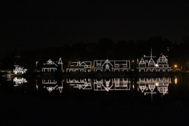 After a presidential term in Philadelphia, I decided to pack my bags and move to London…. On the last night, I walked down to Boathouse Row to take some farewell pictures….. |
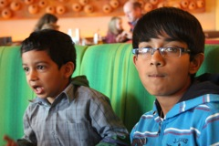 Upon landing in UK, I got a warm welcome at Rupali tai's residence at Hatfield Heath! Here's the naughty Akshay and the quiet Ani in oblivious action... |
Rupali tai and Suresh! |
|
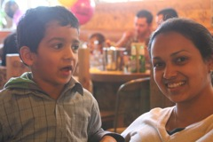 Oh! And even Rich was around in the UK at that time... |
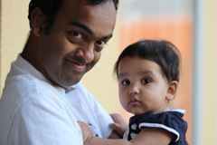 Baby Sara too was a London nivaasi… She gets a visit from her "mama"…We had some fun times together... |
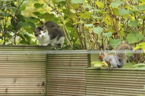 Within a week, I found a home stay with Vanessa Parrott… She had two cats. Here, a squirrel puzzles Squeaky |
|
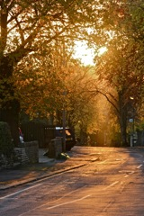 My first weekend in the UK was spent in Sheffield with the Imperial Outdoor Club…. This was taken on a Sheffield suburban street next to the overnight rest stop… |
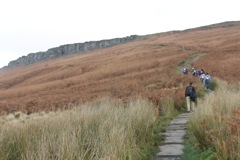 I spent an amazing day out on Stanage Edge.. I'll visit Stanage Edge again later in the summer of 2012 in sunnier conditions.. |
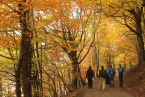 Walking past Lady Bower reservoir... |
|
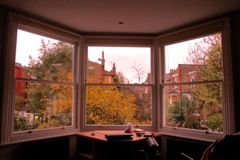 This was my quiet room in Crouch End for the next two years... |
Piglet (yes, that's a catname) is the other one.. |
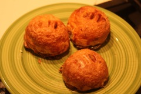 One of my favorite London desserts - Eccles Cakes! |
|
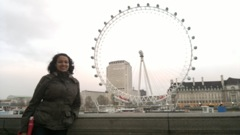 London roaming with Richa before she goes back to India... |
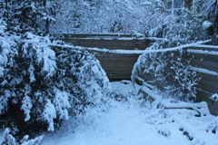 The winter of 2010 saw several inches of snow dumped over London… Public transit and even Heathrow operations were seriously affected! |
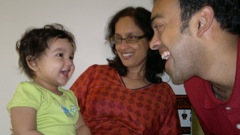 That December I visited India… A nice break! And guess who's waiting for me there?? Miss Sara! |